About me
Qui je suis.
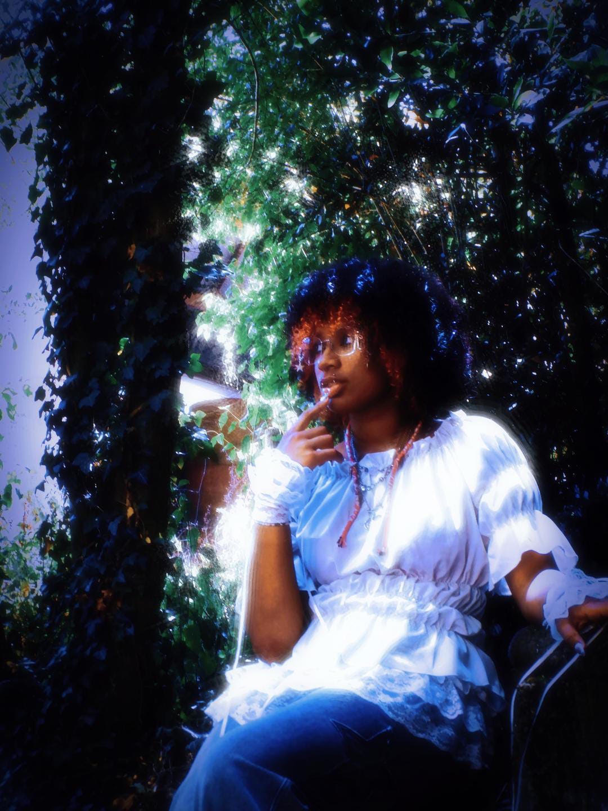
À propos de moi
Née le 01/11/2006, je suis passionnée de montage depuis des années. Je suis quelqu'un de très créatif et j'aime toucher à tout ce qui l'est. Étant aussi une grande fan du monde du cinéma, j'aimerais combiner mes deux passions et devenir monteuse pour des films.
Contact
Téléphone : 07 69 27 71 31
E-mail : enkara.randon@gmail.com
Mes Passions et Projets Non professionnels
→ Chanteuse du groupe Search A MemoryㅤㅤConception du logo, gestion du compte Instagram avec une autre membre du groupe et, bien sûr, chant lors des concerts et des répétitions.
ㅤㅤ1 900 abonnés sur Instagram.
ㅤ
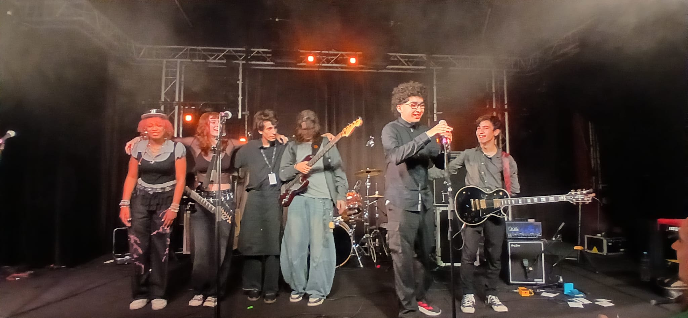
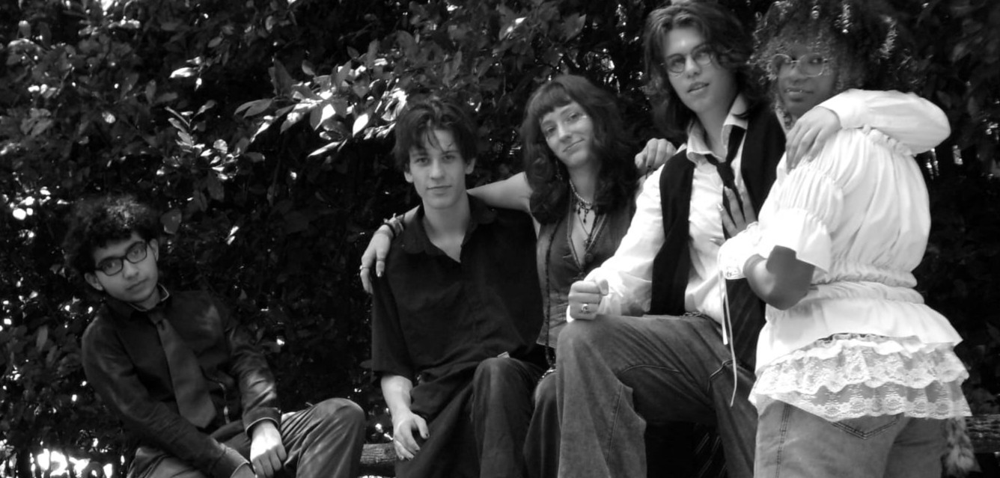
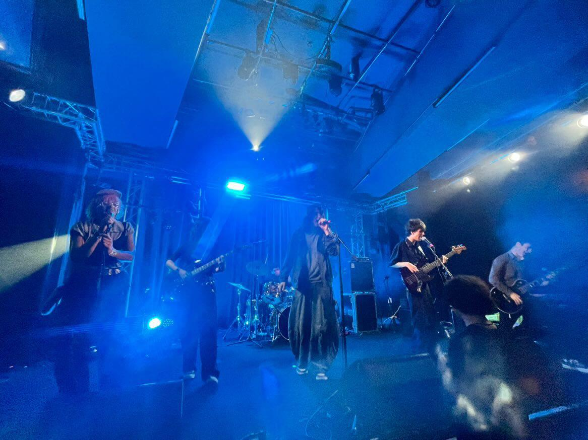
ㅤㅤUn de mes autres hobbies préférés est le dessin, que ce soit sur papier ou sur iPad. J'ai toujours aimé dessiner depuis petite. Toujours en lien avec le dessin, j'essaie de faire de petites animations de mes dessins.
ㅤ
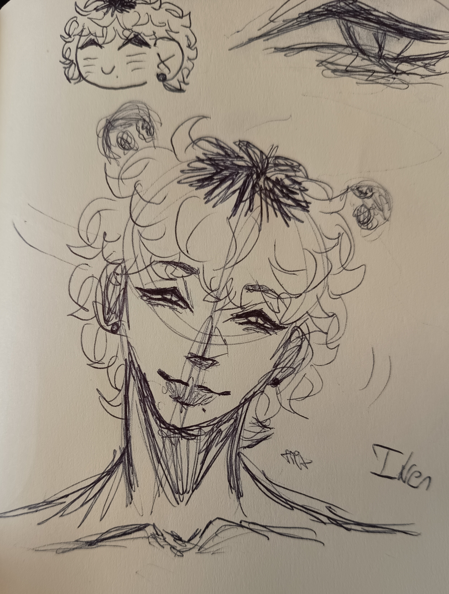
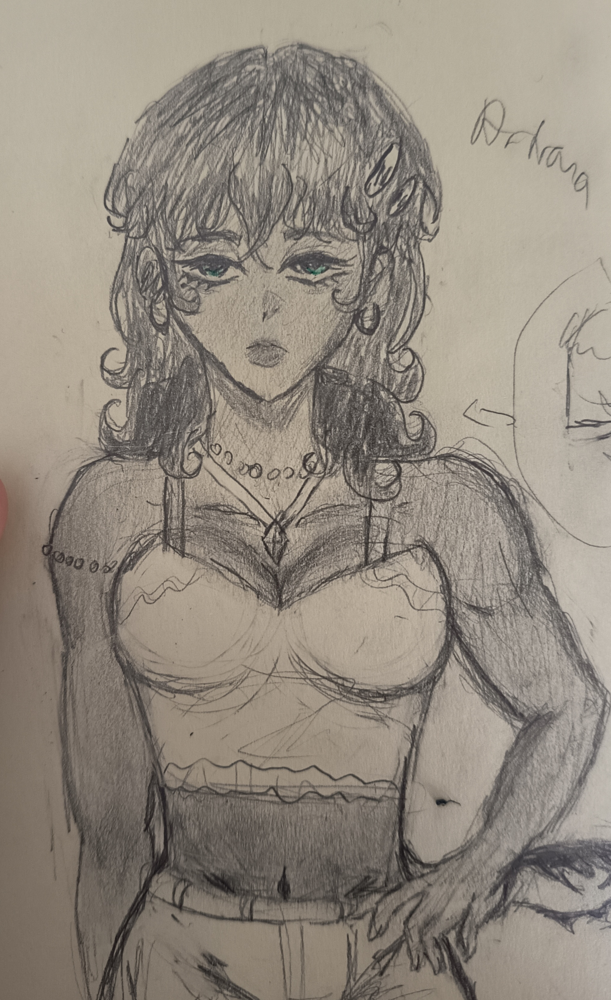
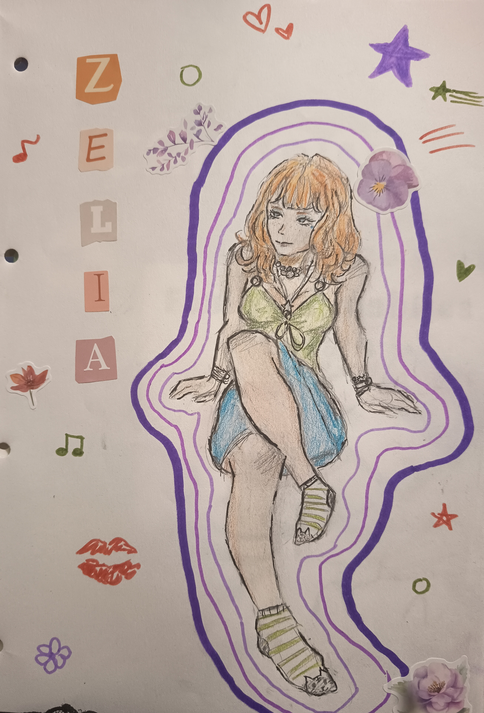
ㅤ
→ Chaîne YouTube de 10 000 abonnés
Animation de ma communauté, création et montage de vidéos gacha life…
ㅤ
Travail sur mon identité visuelle :
Bannière YouTube, intro et outro présentes dans mes vidéos.
ㅤ
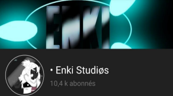
ㅤ
Plusieurs applications utilisées :
ㅤ
- - Gacha Life pour la création des personnages.
- - Ibis Paint pour les retouches et les effets spéciaux.
- - KineMaster pour le montage vidéo.
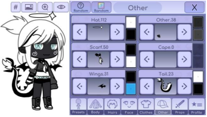
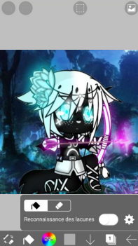
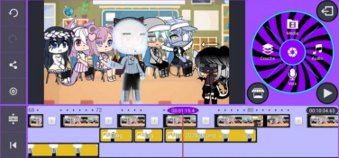
ㅤ